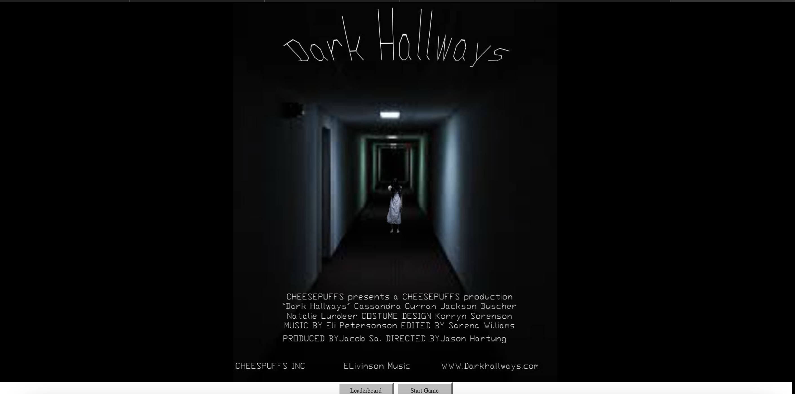

Dark Hallways is a "Horror-esque" point and click video game that I created throughout the last days of my AP Computer Science Principles class in 2023. It features a simple game play loop with multiple paths to allow people to decide what they want to do.
I am currently in the process of improving and updating the game, including better UI, better paths, a score and leaderboard system as well. Here is the deployed link